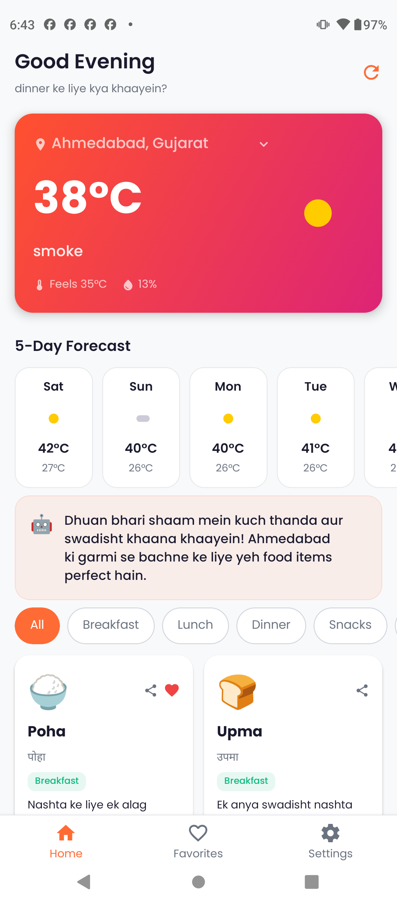
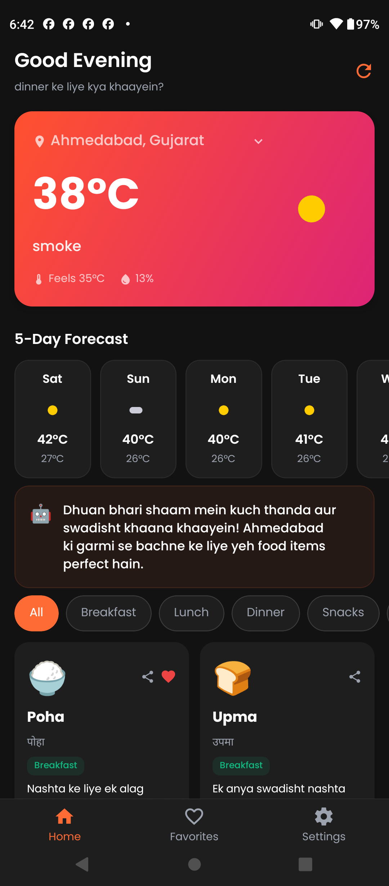
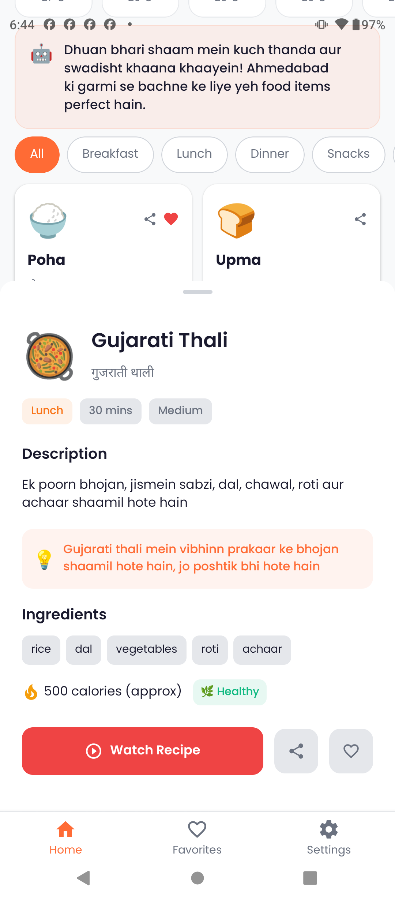
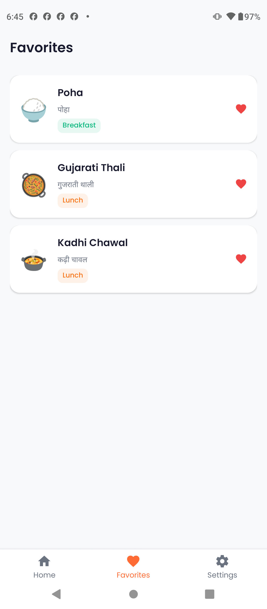
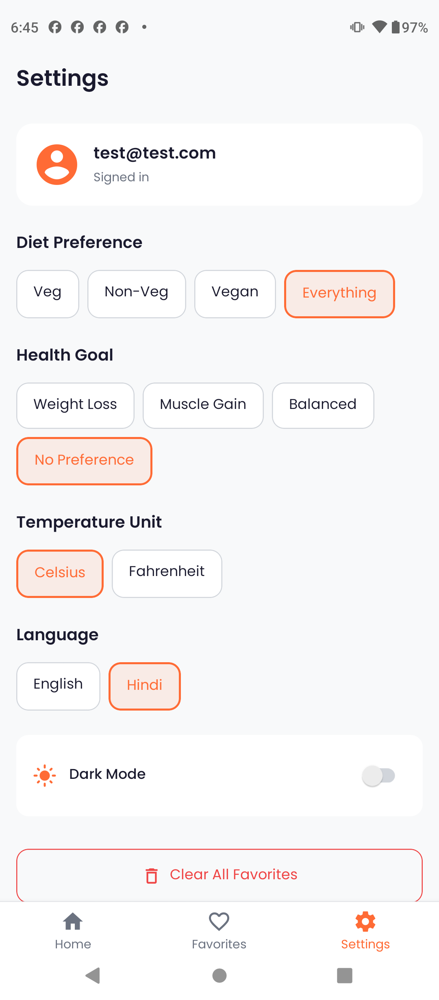
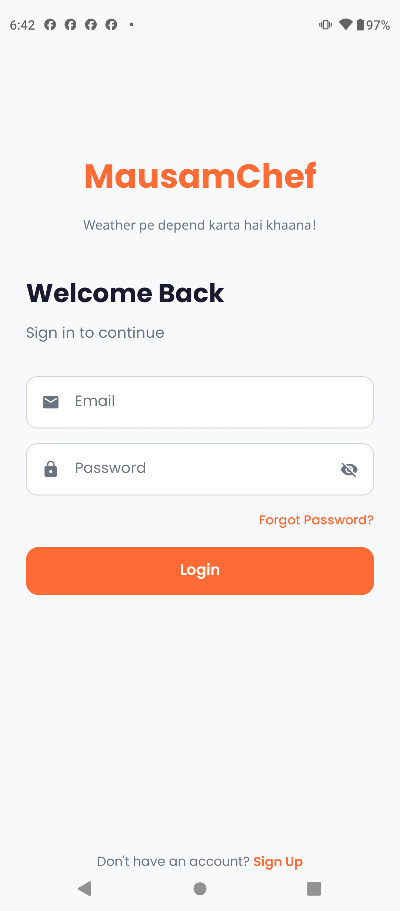

To export: Remove "preview-mode" class from body, then right-click each frame → Inspect → Screenshot node.
Or use: window.document.body.classList.remove('preview-mode') in console, then screenshot each .frame element.
Smart suggestions based on your location

Easy on the eyes, day and night

Ingredients, calories & one-tap recipes

Quick access to dishes you love

Diet, health goals & language preferences

Your data stays private and safe
